Technical report
Does the Partner's Delivery Predict the Reply's Delivery? A Controlled Measurement in Spontaneous Dyadic Conversation
Abstract
Spoken dialogue systems condition the delivery of a reply on the sound of the preceding turn, but the amount of information that a partner's delivery adds once the words of the exchange are known has not been measured under controls that separate it from shared topic, setting and speaker. This report describes a controlled measurement of that conditional predictive dependence in spontaneous dyadic conversation. Reply delivery is represented by eight prosodic dimensions in four blocks covering pitch level and span, final pitch movement, energy and timing. The contribution of partner delivery is defined as the held-out gain in block partial R² over a model of both turns' words and the replier's identity, and it is tested against matched donors drawn from other conversations and from distant turns of the same conversation, with speakers held out of training. Applied to 250 stranger dyads from the Seamless Interaction corpus, the measurement covers 97.2% of audio channels, and a content-only model predicts timing and energy moderately and final pitch movement hardly at all. A semi-synthetic positive control detects injected couplings at block partial R² of 0.002. At zero injected effect, both donor tests reject at close to twice their nominal rate, so the test is not yet calibrated and the partner contribution is not estimated in this report.
1 Introduction
Choosing how to say a sentence is a different problem from choosing what to say. A reply to a question asked in a hushed voice may be quiet, slow, or low, depending on the reply's words, the speaker's usual manner, and the way the question was asked. Conversational speech systems already condition on the sound of the preceding turn, and work on prosodic entrainment has long described how conversation partners come to resemble each other. However, an observed similarity between two turns does not establish how much of a reply's delivery can be predicted from the partner's delivery, especially when both turns share a topic, a room and a register.
This report treats the question as a measurement problem. The quantity of interest is a conditional predictive dependence: the out-of-sample gain in predicting the reply's delivery from adding the partner's delivery to the words of both turns and the replier's identity. The gain is referred to two matched-donor nulls that keep the form of the partner turn and break its pairing with the reply. Evaluation is on speakers held out of training, and every estimate is accompanied by the smallest effect the design can detect. The study measures a known phenomenon and does not propose a new method.
The report presents three contributions.
- A measurement pipeline for turn-level prosodic delivery on 250 dyads, with channel-level quality control, per-speaker standardisation that excludes the context of each target, and a split that holds out speakers.
- A content-only baseline that sets how much of reply delivery is predictable from words, length, position and speaker identity alone.
- A calibration of the matched-donor test on the real data structure, consisting of a semi-synthetic positive control and a check of the rejection rate when no effect is present.
3 Problem Formulation
For turn pair \(i\), let \(\mathbf{y}_i \in \mathbb{R}^8\) be the reply's delivery vector after per-speaker standardisation, \(\mathbf{a}_i \in \mathbb{R}^8\) the partner turn's delivery vector, and \(\mathbf{z}_i\) the conditioning set. The conditioning set holds the reply and partner text embeddings, reply word and syllable counts, turn position, a per-file loudness offset and the replier's identity. At prediction time a model may read the partner turn and the words and length of the reply. It may not read any acoustic measure of the reply.
The eight dimensions fall into four blocks \(b \in \{1,\dots,4\}\). For a reduced model fitted on \(\mathbf{z}\) and a full model fitted on \((\mathbf{z}, \mathbf{a})\), the held-out block partial R² is
where \(\mathcal{T}\) is the set of test pairs. The partner-delivery contribution \(\Delta\) is the observed \(R^2_b\) referred to its distribtion when \(\mathbf{a}_i\) is replaced by a matched donor (Section 5.4). A secondary unit, the mean per-pair increment in Gaussian predictive log-likelihood, is reported beside it. The unit of analysis is the conversation, so all resampling and intervals operate on whole sessions.
The primary hypothesis is H1: conditional on \(\mathbf{z}\), partner delivery predicts reply delivery on a speaker-disjoint test set beyond the matched-donor null. Three secondary hypotheses concern the structure of the partner-to-reply map, its dependence on conversational function, and its concentration at the adjacent turn. They form one Holm-corrected family.
4 Data
4.1 Corpus
The study uses the Naturalistic partition of the Seamless Interaction dataset (Agrawal et al., 2025), released under CC BY-NC 4.0. A session is one dyad recorded in person for about an hour and released as 5 to 20 interactions of 2 to 10 minutes, each following a conversation prompt. Each participant has a separate audio channel, a word-timed transcript and voice-activity segments, so turns are built without speaker diarisation. The provider removed speaker bleed with acoustic echo cancellation and peak-normalised each file. Files are 32-bit floating-point WAV at 48 kHz.
4.2 Sampling frame and selection
Sessions are kept when the participants are recorded as strangers. Only free-conversation interactions are used, because the other interaction types are games in which the task imposes delivery or turn-taking. Interactions whose prompt instructs the manner of speaking are removed, since instructed delivery would be a shared external driver of the target. Figure 1 shows each step.
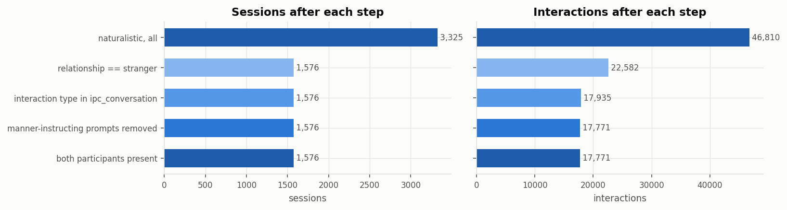
Eligible sessions are ordered at random with seed 20260912 and accepted in that order when neither participant appears in an accepted session, so each speaker contributes one dyad. Acceptance continues until 250 sessions pass channel quality control. Audio is streamed, measured and deleted, and only measurements are stored. Table 1 gives the composition of the sample.
Table 1. Composition of the 250-session sample.
| Quantity | Value | Quantity | Value |
|---|---|---|---|
| Sessions (dyads) | 250 | Audio hours, both channels | 321.4 |
| Speakers | 500 | Conversation hours | 160.7 |
| Interactions | 2,882 | Own-speech hours (voice activity) | 127.9 |
| Audio channels | 5,764 | Timed words | 1,614,916 |
| Recording sites | 4 | Turns (embedded units set aside) | 108,837 |
| Candidate turn pairs | 105,993 |
4.3 Turns and pairs
Words are grouped per speaker into inter-pausal units (IPUs) separated by silences of at least 50 ms. A turn is a maximal run of one speaker's IPUs with no partner speech between them. A partner unit lying entirely inside the other speaker's turn does not end that turn. It is marked as embedded and forms no pair. A pair is two consecutive non-embedded turns by different speakers within one interaction (Figure 2). The order of interactions within a session is not released, so pairs never cross an interaction boundary.
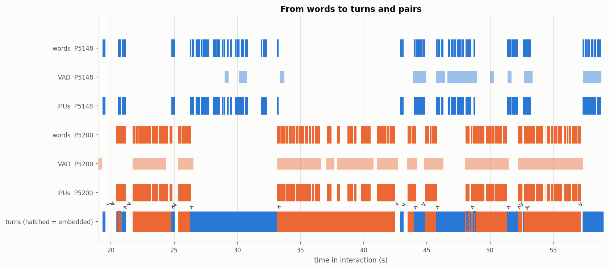
4.4 Properties of the conversations
Figure 3 shows how the measurement sees an interaction. Each microphone's level rises when its speaker talks and stays near the noise floor otherwise, and pitch is tracked only inside each speaker's own speech.
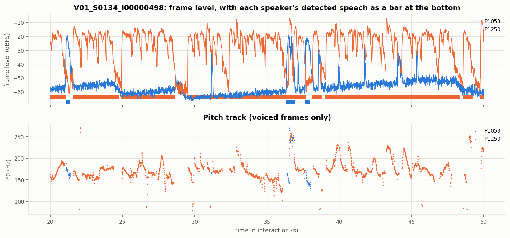
Conversations are uneven. The median share of talk held by the more talkative speaker of an interaction is 0.642. Replies start a median of 0.04 s after the partner stops, 43.3% of replies begin in overlap, and 44% of replies are one or two words long (Figure 4).
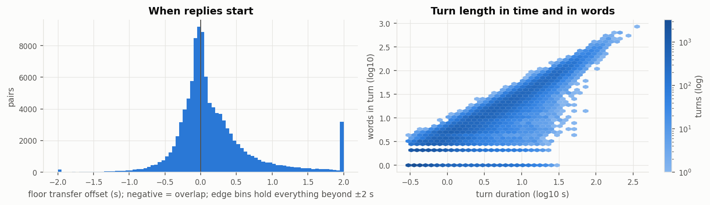
Speakers differ strongly in typical pitch and level. Between-speaker differences account for 95.4% of the variance of median F0 across a speaker's interactions and for 96.0% of the variance of median intensity. For pitch span and intensity span the shares are 66.0% and 52.6% (Figure 5). Every target is therefore standardised per speaker before any model sees it.
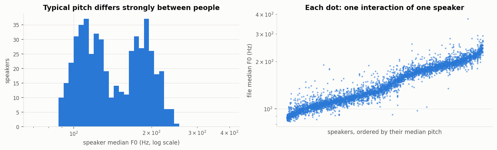
4.5 Listening examples
Seven 20-second excerpts illustrate the recordings. They were chosen by a fixed, seeded rule that reads only channel quality and turn structure, never a delivery measure: one interaction per recording site, plus the interaction with the most overlapping speech, one with a clipped loud transient, and the one with the longest turns. Each excerpt is stereo with one speaker per channel, so headphones let each voice be heard separately. The excerpts enter no analysis. One is given here and all seven are in Appendix B.
Most overlapping speech · interaction V03_S0362_I00000123, 105–125 s
Both speakers talk at once for long stretches. Each voice stays clear in its own channel, and the partner is faint in the other channel.
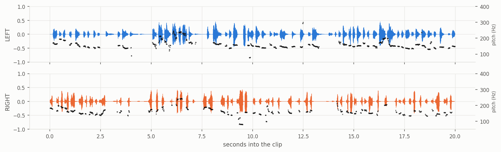
Audio: Seamless Interaction dataset (Agrawal et al., 2025), CC BY-NC 4.0. Excerpt cut from the two participant files and combined into one stereo file.
5 Methodology
5.1 Delivery targets
The target has eight dimensions in four blocks (Table 2). F0 and intensity are measured with Praat through the parselmouth binding, with a fixed pitch range of 75 to 500 Hz. Pitch is analysed inside the union of the voice-activity segments and the transcript's word regions, merged within 50 ms. Mean intensity uses energy averaging, and frames during the partner's speech are excluded from both intensity values. Syllables are counted with the CMU Pronouncing Dictionary and a vowel-group rule for unlisted words.
Table 2. The eight delivery dimensions.
| Block | Dimensions |
|---|---|
| Pitch level and span | mean log-F0, log-F0 range (95th − 5th percentile) |
| Pitch boundary | slope of log-F0 over the final 300 ms |
| Energy | mean intensity, intensity range (95th − 5th percentile) |
| Timing | articulation rate, pause ratio, longest internal pause |
Each dimension \(d\) of turn \(t\) by speaker \(s\) is standardised per speaker (Levitan and Hirschberg, 2011):
where \(C_t\) is the set holding the target turn and every turn used as its context, and the mean and standard deviation are computed over the speaker's other turns in the session. At least 10 other turns are required. Within each block the standardised dimensions are decorrelated with a ZCA-cor whitening transform fitted on training pairs (Kessy et al., 2018). A turn with any missing dimension is dropped.
5.2 Conditioning set
Reply and partner texts are encoded with the frozen all-MiniLM-L6-v2 sentence encoder (Reimers and Gurevych, 2019, Wang et al., 2020), which gives 384 dimensions per turn, and each is reduced to 64 dimensions by a principal component analysis fitted on training pairs. The set also holds reply word count, reply syllable count, turn position, the replier's identity as a one-hot vector over training repliers (zero for unseen speakers), and a per-file loudness offset. The offset is the file's median intensity over voiced frames and absorbs the per-file peak normalisation.
5.3 Estimators
Each condition is fitted with ridge regression (Hoerl and Kennard, 1970),
where \(n\) is the number of fitting rows and \(\lambda_{\mathrm{rel}}\) is chosen from 15 values between \(10^{-5}\) and 100 by five-fold nested cross-validation with whole sessions as folds (Roberts et al., 2017, Varma and Simon, 2006). Reduced-rank ridge regression (Izenman, 1975, Mukherjee and Zhu, 2011), with rank 1 to 8, gives a low-rank view of the partner-to-reply map. A linear model keeps that map directly readable. The held-out quantity comes from one fit on training sessions and one read of the test sessions.
5.4 Matched-donor nulls
Two nulls refit the full model with a donor turn's delivery in place of \(\mathbf{a}_i\).
- N1, cross-conversation donor. A partner turn from another session in the same split, matched on duration decile and then on word count. It preserves the dimensionality, scale, marginal distribution and length of partner delivery, and it destroys the pairing.
- N2, within-conversation distant donor. A turn of the same partner in the same interaction, at least 10 turns away. It preserves speaker, setting, register and broad topic, and it destroys local adjacency.
With \(B=500\) seeded draws \(\tilde{\Delta}_1,\dots,\tilde{\Delta}_B\) per null, the p-value is
Under exchangeability the test that rejects when \(p\le\alpha\) has exact size \((\lfloor\alpha B\rfloor+1)/(B+1)=26/501=0.0519\) at \(\alpha=0.05\). The construction approximates a conditional randomisation test (Candès et al., 2018, Berrett et al., 2020), and its validity on this data is checked empirically (Section 5.6).
5.5 Inference
Intervals come from a paired session-level cluster bootstrap with 2,000 resamples. The reported interval is the bootstrap-t, with percentile and BCa intervals beside it (Field and Welsh, 2007, Cameron et al., 2008). Its worst simulated coverage is 0.934 at 25 test sessions. A mixed-effects model with a speaker variance component gives a second check (Barr et al., 2013).
5.6 Calibration: positive control and null check
A semi-synthetic coupling of known size is injected into the real targets and the full pipeline is run on the result:
where \(\hat{f}\) is the fitted content-only prediction, \(g\) is the identity map on matched dimensions (with one cross-dimension variant that maps each partner dimension to a different reply dimension), and \(\boldsymbol{\varepsilon}^{*}_i\) are residuals resampled as contiguous, order-preserving runs of whole sessions. This resampling keeps the serial dependence between turns and the covariance across dimensions. The scale \(\beta\) is set so that the injected block partial R² takes seven levels from 0.002 to 0.05, with 50 replicates per level. The minimum detectable effect (MDE) is the smallest level at which power reaches 0.80 (Bloom, 1995).
At \(\beta=0\) there is no coupling, so each donor test should reject at its exact size. With \(R=2{,}000\) replicates and \(r\) rejections, the null check (gate G1) passes for a donor scheme when the one-sided 95% Clopper–Pearson upper bound satisfies
which is Bradley's liberal criterion (Bradley, 1978). With 2,000 replicates a valid test passes both schemes with probability 0.991, and a test with a true rate of 0.075 passes with probability 0.002.
6 Experimental Setup
6.1 Speaker-disjoint split
Sessions are split into training, validation and test partitions with seed 20260912 so that no recorded participant identifier appears in more than one partition (Table 3). The release documentation reports occasional identifier errors, so a metadata screen links two sessions of one site when one identifier equals the other plus the suffix "A", or when both disclosed five-domain BFI-2 personality profiles are identical. In the sample, 11 candidate links join 15 sessions into four groups, one of nine sessions and three of two. Each group is placed whole in one partition and no session is excluded. Near-duplicate transcripts, defined by a Jaccard similarity of at least 0.5 over five-word shingles, would be grouped in the same way, and none were found. All learned transforms are fitted on training pairs only.
Table 3. The speaker-disjoint split.
| Partition | Sessions | Speakers | Pairs in analysis set |
|---|---|---|---|
| Training | 176 | 352 | 37,600 |
| Validation | 25 | 50 | 6,922 |
| Test | 49 | 98 | 12,107 |
| Total | 250 | 500 | 56,629 |
6.2 Analysis set
A pair enters the analysis set when all eight dimensions are measured on the reply, the partner turn and the replier's previous turn, and when an N2 donor exists. One common set serves every condition, so missing data cannot differ between conditions. Table 4 counts each candidate pair once, under the first reason that excludes it.
Table 4. Candidate pairs by exclusion reason and partition.
| Reason | Training | Validation | Test | All |
|---|---|---|---|---|
| Included | 37,600 | 6,922 | 12,107 | 56,629 |
| Simultaneous onset | 160 | 19 | 40 | 219 |
| Reply not measurable | 13,459 | 1,347 | 4,613 | 19,419 |
| Partner turn not measurable | 10,172 | 1,083 | 3,408 | 14,663 |
| No previous turn of the replier | 1,201 | 209 | 389 | 1,799 |
| Previous turn not measurable | 7,311 | 829 | 2,460 | 10,600 |
| No N2 donor | 1,899 | 296 | 469 | 2,664 |
| All candidates | 71,802 | 10,705 | 23,486 | 105,993 |
6.3 Implementation
All stages are implemented in Python and run on Google Colab CPU runtimes with pinned versions of numpy, pandas, scipy, scikit-learn, statsmodels and praat-parselmouth. Each run directory stores a run record with the data kind, the split hash, the settings in force, the environment and a fingerprint of the code that produced it. A fitting job runs only after the project's integrity test suite has passed for that code fingerprint. The calibration ran after 303 integrity tests passed. Donor draws, selection and splits are seeded and saved. Fixed settings are listed in Appendix A.
7 Results
7.1 Channel quality and measurement viability
Of 5,764 audio channels, 5,600 (97.2%) pass the objective checks. The rest contain no detected voice activity (136) or no timed words (2). No channel failed on a missing or unreadable file, a wrong sample rate, a non-mono file or a duration mismatch. Table 5 and Figure 6 give channel quality by recording site.
Table 5. Median channel quality by recording site over usable channels. Overlap attenuation is a speaker's median level during double talk minus the median level when speaking alone. Flat-top runs indicate clipping.
| Site | Channels | SNR (dB) | Bleed (dB) | Overlap atten. (dB) | Voiced share | Clipped channels |
|---|---|---|---|---|---|---|
| 0 | 632 | 33.25 | −35.87 | −1.61 | 0.65 | 0.0% |
| 1 | 771 | 28.90 | −29.57 | −2.24 | 0.68 | 64.5% |
| 2 | 1,225 | 27.77 | −29.77 | −1.48 | 0.70 | 0.9% |
| 3 | 2,972 | 49.94 | −52.28 | −0.89 | 0.67 | 4.4% |
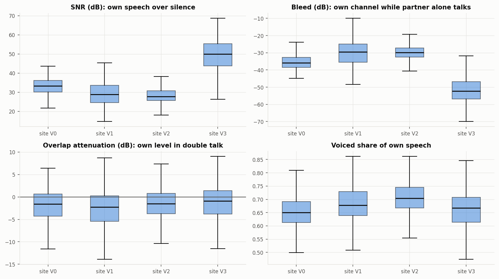
The viability gate G0 requires at least 80% usable channels and feature droppage below 15%, where droppage is the share of candidate-pair turns with fewer than 10 voiced frames. On the sample, droppage is 5.8% and 10.9% of pairs lose either turn, so G0 passes. Droppage is concentrated in very short turns (Figure 7). It is 35.4% for turns under 0.25 s and below 0.5% for turns longer than one second.
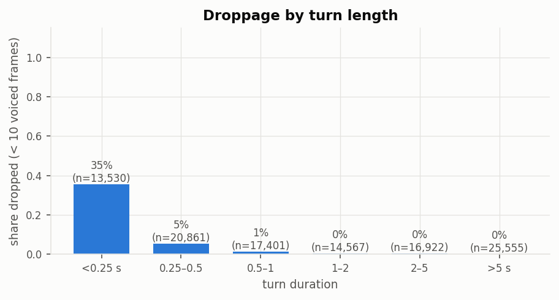
7.2 Delivery targets
Table 6 gives the share of the 108,837 turns missing each dimension. The final log-F0 slope needs voiced frames inside the last 300 ms of the turn and is missing for 18.0% of turns. It accounts for most of the 18.5% of turns that miss at least one dimension. Figure 8 shows the raw distributions. Within blocks, raw correlations are 0.15 between mean log-F0 and log-F0 range, 0.10 between mean intensity and intensity range, and 0.65 between pause ratio and longest internal pause, which the whitening step removes.
Table 6. Turns missing each dimension.
| Dimension | Missing | Main reason |
|---|---|---|
| Mean log-F0, log-F0 range | 5.8% | too few voiced frames |
| Final log-F0 slope | 18.0% | too few voiced frames in the final 300 ms |
| Mean intensity | 0.3% | no speech frames outside overlap |
| Intensity range | 0.7% | no speech frames outside overlap |
| Articulation rate, pause ratio, longest pause | < 0.01% | zero phonation time |
| Any dimension | 18.5% |
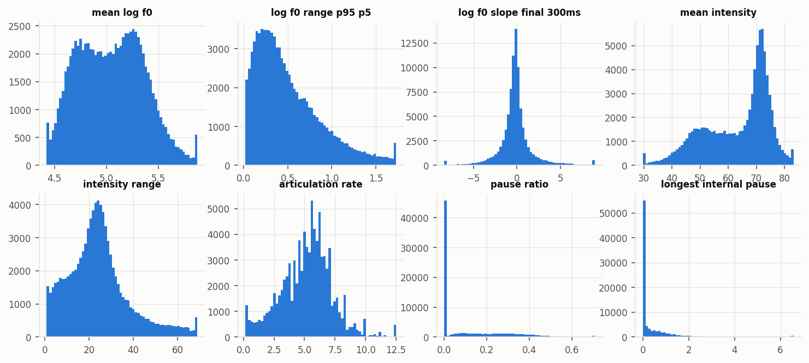
Three leakage checks were run on real pairs. A request through the pair interface for a reply's own duration was refused, and the same turn was served when requested as the partner of the following pair. Adding 100 units to a replier's previous turn, which belongs to the context set \(C_t\) in Equation \eqref{eq:std}, moved the standardised target by at most \(4.1\times10^{-13}\), while the same change to an ordinary turn of that speaker moved it by 1.30. Over 19,029 held-out targets, per-dimension means lie between −0.053 and 0.027 and standard deviations between 0.970 and 1.064, close to but not exactly 0 and 1, as expected when the statistics come from other turns.
7.3 Content-only baseline and serial dependence
The content-only model predicts \(\mathbf{y}\) from \(\mathbf{z}\) alone and is the reduced model of Equation \eqref{eq:pr2}. Table 7 reports its out-of-fold R² on the 37,600 training pairs. No test pair was read. Words, length, position, loudness offset and speaker identity predict timing (0.198) and energy (0.129) moderately, pitch level and span weakly (0.051), and the final pitch movement hardly at all (0.003). No selected penalty lies at the edge of its grid.
Table 7. Content-only baseline: out-of-fold R² on training pairs, the selected relative penalty \(\lambda_{\mathrm{rel}}\), and the effective degrees of freedom.
| Block | Out-of-fold R² | \(\lambda_{\mathrm{rel}}\) | Effective df |
|---|---|---|---|
| Pitch level and span | 0.051 | 0.3 | 318.7 |
| Pitch boundary | 0.003 | 1.0 | 207.3 |
| Energy | 0.129 | 0.3 | 318.7 |
| Timing | 0.198 | 0.1 | 377.0 |
| Mean over blocks | 0.095 |
Serial dependence reduces the effective sample and sets how the calibration must resample. Table 8 gives the correlation of each standardised dimension between consecutive turns of the same speaker, before and after removing what the content features predict. Mean pitch and mean intensity carry the most dependence from turn to turn.
Table 8. Within-speaker lag-1 correlation of standardised delivery on 37,600 training pairs.
| Dimension | Raw | Residual on content | Dimension | Raw | Residual on content |
|---|---|---|---|---|---|
| Mean log-F0 | 0.243 | 0.237 | Intensity range | 0.036 | 0.024 |
| Log-F0 range | 0.075 | 0.068 | Articulation rate | 0.101 | 0.065 |
| Final log-F0 slope | 0.001 | 0.000 | Pause ratio | 0.134 | 0.055 |
| Mean intensity | 0.243 | 0.209 | Longest internal pause | 0.096 | 0.032 |
7.4 Donor construction and the session bootstrap
N1 matched word count exactly for 99.7% of pairs, and the rest were matched to the nearest word count within the same duration decile. The median N1 candidate pool holds 173 turns per test pair and 434 per training pair, and the smallest pool holds one. Every assignment passed the validity checks: the donor is never the true partner, it lies in the same partition, N1 comes from another session, and N2 comes from the same session at least ten turns away.
The session bootstrap was checked on simulated clustered data with known cluster structure (Table 9). Its standard error agrees with the analytic cluster standard error, and a pair-level bootstrap understates the error by a factor of about seven.
Table 9. Session bootstrap check on simulated clustered data, 200 replicates.
| Quantity | Value |
|---|---|
| Standard error, session bootstrap | 0.124 |
| Standard error, analytic cluster formula | 0.129 |
| Standard error, pair-level bootstrap | 0.017 |
| Coverage of the 95% session-bootstrap interval | 0.92 |
7.5 Calibration of the donor test
Positive control. Table 10 and Figure 9 (left) give power against N1 for the identity coupling. Power is at least 0.96 in every block at the smallest injected level, block partial R² of 0.002, and reaches 1.00 in every block from 0.01. The cross-dimension variant gives the same pattern. The MDE therefore lies at or below the smallest level tested and is recorded as 0.002, with a realised partial R² of 0.0017 at that level. These power values are measured against the donor test as calibrated in the next paragraph.
Table 10. Power against N1 by injected block partial R², identity coupling on matched dimensions, 50 replicates per level, \(\alpha=0.05\).
| Injected partial R² | Pitch level and span | Pitch boundary | Energy | Timing | Mean over blocks |
|---|---|---|---|---|---|
| 0.002 | 0.96 | 1.00 | 0.96 | 0.98 | 1.00 |
| 0.0025 | 1.00 | 1.00 | 0.96 | 0.98 | 1.00 |
| 0.005 | 1.00 | 1.00 | 1.00 | 0.98 | 1.00 |
| 0.01 to 0.05 | 1.00 | 1.00 | 1.00 | 1.00 | 1.00 |
Null check. At \(\beta=0\) the full pipeline was fitted 2,000 times and each fit was tested against both nulls with 500 donor draws (Table 11 and Figure 9, right). Both tests reject a true null more often than their exact size of 0.0519. The rates are 1.7 and 1.8 times the exact size, and the lower ends of both 95% intervals lie above the bound of 0.075. G1 therefore fails for both donor schemes. The excess is of similar size under N1 and N2. The cause of the excess rejection is currently being analysed.
Table 11. Rejection rate at \(\beta=0\), \(\alpha=0.05\), 2,000 replicates per null.
| Null | Rejections | Rate | 95% interval | One-sided upper bound | Criterion | G1 |
|---|---|---|---|---|---|---|
| N1 | 176 | 0.088 | 0.076–0.101 | 0.099 | ≤ 0.075 | Fail |
| N2 | 187 | 0.0935 | 0.081–0.107 | 0.105 | ≤ 0.075 | Fail |
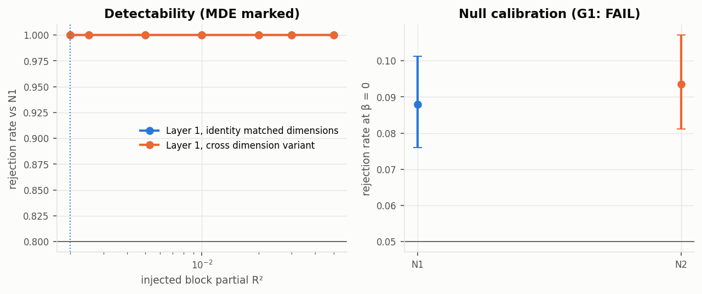
8 Limitations
Population and recording. The speech is prompted, recorded in person with a moderator present, and produced by strangers. The released audio was processed by the provider to remove bleed and peak-normalised per file, which can attenuate a speaker during double talk by about 1 to 2 dB at the median (Table 5). Findings do not extend to familiar pairs, unprompted conversation or other recording conditions.
Speaker-disjointness. Evaluation is disjoint by recorded participant identifier, with metadata-flagged candidates grouped. A person registered under two identifiers with undisclosed or differing profiles would not be detected, so this is not verified generalisation to unseen persons.
Coverage of short turns. The analysis set keeps 56,629 of 105,993 candidate pairs. Very short turns are the most often unmeasurable, so backchannels and one-word replies are under-represented.
Turn-level summaries. Each dimension summarises a whole turn. The targets do not describe the shape of the pitch or energy contour within a turn.
Number of clusters. The test partition holds 49 sessions. With few clusters, bootstrap intervals can undercover, and the bootstrap-t used here has a worst simulated coverage of 0.934.
Adjacency and shared state. The within-conversation donor holds fixed what is constant within an interaction. It does not hold fixed shared state that changes within about ten turns, so a contrast between adjacent and distant turns identifies an ordering of predictive dependence and not a mechanism.
9 Ethics Statement
The Seamless Interaction dataset is used under its CC BY-NC 4.0 licence for non-commercial research, with attribution to its creators (Agrawal et al., 2025). Audio is streamed, measured and deleted, and only turn-level measurements are stored. The seven listening excerpts are cut from released files, are attributed beside each player, and enter no analysis. Participant identifirs are used only to build speaker-disjoint splits and to standardise each speaker's measurements. The study measures delivery and does not generate speech, clone voices or transfer speaking style.
10 Future Work
Once the donor test holds its nominal size, the measurement will be used to estimate the contribution of partner delivery on held-out speakers, with its minimum detectable effect stated. Further analyses will examine whether the dependence follows reproducible partner-to-reply directions, whether it is concentrated at the adjacent turn, and whether it differs across conversational functions such as questions and answers. A separate study will ask whether learned speech representations of the partner turn carry delivery information beyond the eight interpretable dimensions.
11 Conclusion
This report set out a controlled measurement of how much a partner's prosodic delivery predicts the delivery of the reply, once the words of both turns and the replier's identity are known. On 250 stranger dyads, the measurement covers 97.2% of channels, the split holds out speakers by recorded identifier, and the leakage checks behave as designed on real pairs. A content-only model predicts reply timig and energy moderately and final pitch movement hardly at all. The positive control detects injected couplings down to block partial R² of 0.002. The null check shows that both matched-donor tests reject a true null at 8.8% and 9.35% against an exact size of 5.2%, so the contribution of partner delivery is not estimated in this report. A natural extension of the measurement is to ask whether learned speech representations of the partner turn carry delivery information beyond the eight interpretable dimensions.
References
- Agrawal, V. et al. 2025. Seamless Interaction: Dyadic audiovisual motion modeling and large-scale dataset. arXiv:2506.22554.
- Barr, D. J., Levy, R., Scheepers, C., and Tily, H. J. 2013. Random effects structure for confirmatory hypothesis testing: Keep it maximal. Journal of Memory and Language. doi:10.1016/j.jml.2012.11.001
- Berrett, T. B., Wang, Y., Barber, R. F., and Samworth, R. J. 2020. The conditional permutation test for independence while controlling for confounders. Journal of the Royal Statistical Society: Series B. doi:10.1111/rssb.12340
- Bloom, H. S. 1995. Minimum detectable effects: A simple way to report the statistical power of experimental designs. Evaluation Review. doi:10.1177/0193841X9501900504
- Bradley, J. V. 1978. Robustness? British Journal of Mathematical and Statistical Psychology. doi:10.1111/j.2044-8317.1978.tb00581.x
- Cameron, A. C., Gelbach, J. B., and Miller, D. L. 2008. Bootstrap-based improvements for inference with clustered errors. The Review of Economics and Statistics. doi:10.1162/rest.90.3.414
- Candès, E., Fan, Y., Janson, L., and Lv, J. 2018. Panning for gold: Model-X knockoffs for high dimensional controlled variable selection. Journal of the Royal Statistical Society: Series B. doi:10.1111/rssb.12265
- Field, C. A., and Welsh, A. H. 2007. Bootstrapping clustered data. Journal of the Royal Statistical Society: Series B. doi:10.1111/j.1467-9868.2007.00593.x
- Fuscone, S., Favre, B., and Prévot, L. 2020. Neural representations of dialogical history for improving upcoming turn acoustic parameters prediction. In Proceedings of Interspeech 2020. doi:10.21437/Interspeech.2020-2785
- Guo, H. et al. 2021. Conversational end-to-end TTS for voice agents. In Proceedings of IEEE SLT 2021.
- Hoerl, A. E., and Kennard, R. W. 1970. Ridge regression: Biased estimation for nonorthogonal problems. Technometrics.
- Izenman, A. J. 1975. Reduced-rank regression for the multivariate linear model. Journal of Multivariate Analysis.
- Kessy, A., Lewin, A., and Strimmer, K. 2018. Optimal whitening and decorrelation. The American Statistician. doi:10.1080/00031305.2016.1277159
- Levitan, R., and Hirschberg, J. 2011. Measuring acoustic-prosodic entrainment with respect to multiple levels and dimensions. In Proceedings of Interspeech 2011.
- Lin, G.-T., Chiang, C.-H., and Lee, H.-y. 2024. Advancing large language models to capture varied speaking styles and respond properly in spoken conversations. In Proceedings of ACL 2024. aclanthology.org/2024.acl-long.358
- Mukherjee, A., and Zhu, J. 2011. Reduced rank ridge regression and its kernel extensions. Statistical Analysis and Data Mining. doi:10.1002/sam.10138
- Nasir, M., Baucom, B., Narayanan, S., and Georgiou, P. 2018. Towards an unsupervised entrainment distance in conversational speech using deep neural networks. In Proceedings of Interspeech 2018. arXiv:1804.08782
- Nishimura, Y., Saito, Y., Takamichi, S., Tachibana, K., and Saruwatari, H. 2022. Acoustic modeling for end-to-end empathetic dialogue speech synthesis using linguistic and prosodic contexts of dialogue history. In Proceedings of Interspeech 2022. doi:10.21437/Interspeech.2022-403
- Reichel, U. D., Mády, K., and Cole, J. 2018. Prosodic entrainment in dialog acts. arXiv:1810.12646.
- Reimers, N., and Gurevych, I. 2019. Sentence-BERT: Sentence embeddings using Siamese BERT-networks. In Proceedings of EMNLP-IJCNLP 2019.
- Roberts, D. R. et al. 2017. Cross-validation strategies for data with temporal, spatial, hierarchical, or phylogenetic structure. Ecography. doi:10.1111/ecog.02881
- Varma, S., and Simon, R. 2006. Bias in error estimation when using cross-validation for model selection. BMC Bioinformatics. doi:10.1186/1471-2105-7-91
- Wang, W. et al. 2020. MiniLM: Deep self-attention distillation for task-agnostic compression of pre-trained transformers. In Proceedings of NeurIPS 2020.
- Xue, J. et al. 2023. M2-CTTS: End-to-end multi-scale multi-modal conversational text-to-speech synthesis. In Proceedings of ICASSP 2023. arXiv:2305.02269
Appendices
A Fixed method settings
| Setting | Value |
|---|---|
| Selection and split seed | 20260912 |
| Pitch range | fixed, 75 to 500 Hz |
| Pitch analysis regions | union of voice-activity segments and transcript word regions, merged within 50 ms |
| Minimum voiced frames per turn and for the boundary slope | 10 |
| Minimum other turns for a speaker's statistics | 10 |
| Text encoder | all-MiniLM-L6-v2, frozen, 384 dimensions, PCA to 64 per turn |
| Nested cross-validation | 5 folds, sessions as fold unit |
| Penalty grid \(\lambda_{\mathrm{rel}}\) | 15 values from \(10^{-5}\) to 100, multiplied by the number of fitting rows |
| Rank grid, reduced-rank ridge | 1 to 8 |
| Variance floor, log-likelihood unit | 1% of the mean squared residual |
| Bootstrap | 2,000 session resamples, bootstrap-t, levels 0.68 and 0.95 |
| N1 matching | duration decile within partition, then exact word count, then nearest word count within the decile |
| N2 minimum distance | 10 turns, same partner, same interaction |
| Donor draws per null | 500 |
| Near-duplicate rule | 5-word shingles, Jaccard threshold 0.5 |
| Injection | 7 levels from 0.002 to 0.05, 50 replicates per level, order-preserving session-block residuals |
| Null check (G1) | \(\alpha=0.05\), 2,000 replicates at \(\beta=0\), Clopper–Pearson upper bound \(\le 0.075\) |
| Power level for the MDE | 0.80 |
B Listening examples
Each excerpt is 20 seconds of one interaction, stereo with the first participant on the left channel and the second on the right. The figure under each player shows both waveforms with pitch estimates on voiced frames.
Site 0 · V00_S1886_I00000068, 121–141 s
The excerpt chosen for recording site 0.
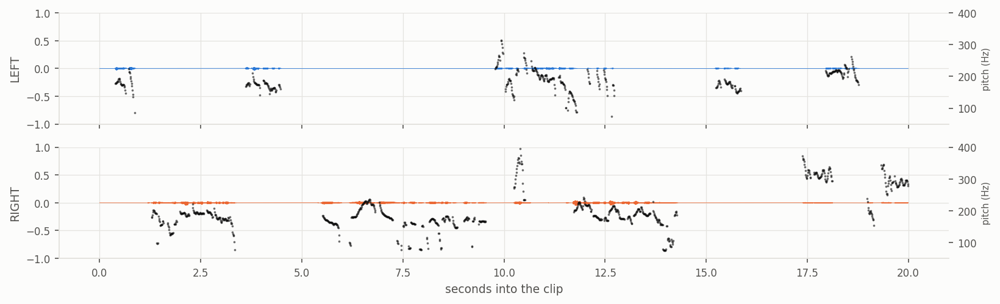
Audio: Seamless Interaction (Agrawal et al., 2025), CC BY-NC 4.0. Excerpt combined from two participant files.
Site 1 · V01_S0091_I00000313, 0–20 s
The excerpt chosen for recording site 1, the site with the most clipping.
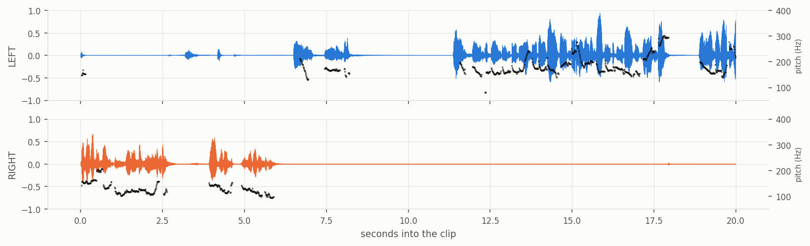
Audio: Seamless Interaction (Agrawal et al., 2025), CC BY-NC 4.0. Excerpt combined from two participant files.
Site 2 · V02_S5060_I00000149, 0–20 s
The excerpt chosen for recording site 2.
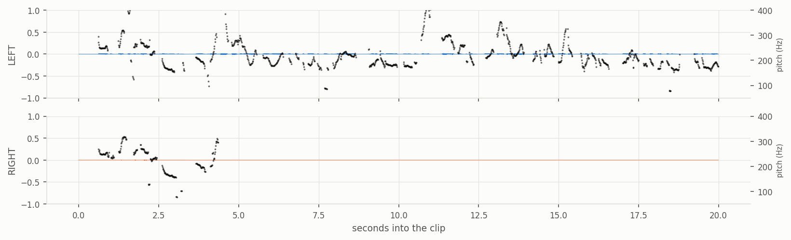
Audio: Seamless Interaction (Agrawal et al., 2025), CC BY-NC 4.0. Excerpt combined from two participant files.
Site 3 · V03_S1657_I00000143, 95–115 s
The excerpt chosen for recording site 3, the site with the cleanest channels.
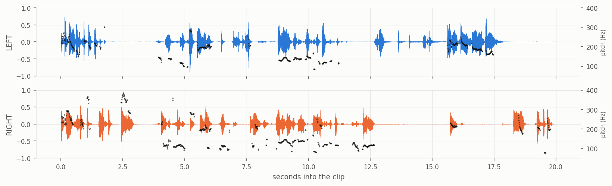
Audio: Seamless Interaction (Agrawal et al., 2025), CC BY-NC 4.0. Excerpt combined from two participant files.
Most overlapping speech · V03_S0362_I00000123, 105–125 s
The interaction with the most double talk. Overlap is where echo cancellation can attenuate a speaker.
Audio: Seamless Interaction (Agrawal et al., 2025), CC BY-NC 4.0. Excerpt combined from two participant files.
Clipped loud transient · V01_S0088_I00000139, 1–21 s
An interaction with a loud event that clips the channel.
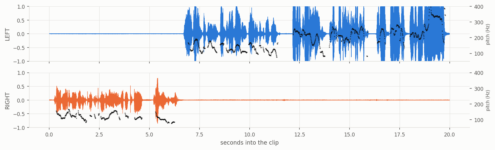
Audio: Seamless Interaction (Agrawal et al., 2025), CC BY-NC 4.0. Excerpt combined from two participant files.
Longest turns · V03_S1232_I00000453, 76–96 s
The window is placed on the longest turn of the interaction with the longest turns. Turns of two seconds and longer carry most of the speech time in the corpus.
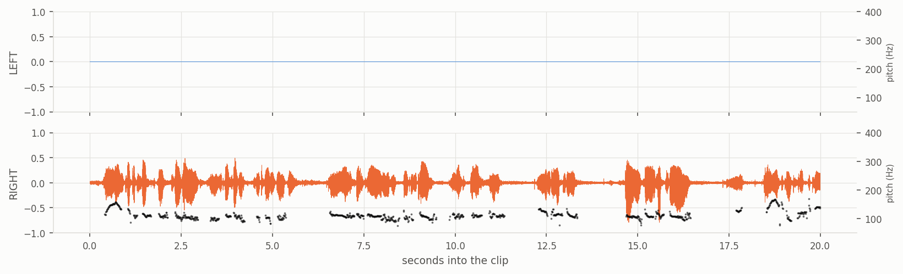
Audio: Seamless Interaction (Agrawal et al., 2025), CC BY-NC 4.0. Excerpt combined from two participant files.